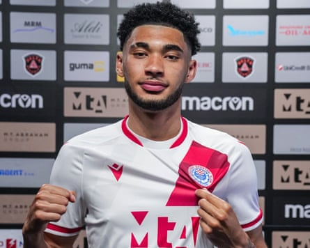
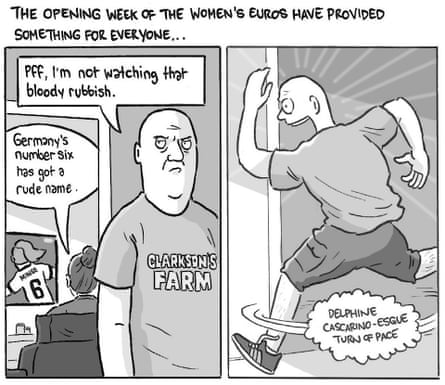

UNTIED
Like a group of lads nervously assembling at an airport pub before jetting off on yet another bonfire of a stag do, Manchester United’s first-team players – well, at least some of them – this week shuffled back into whatever the training ground is called these days, with a few even attempting what was known in the 1990s and the 2000s at Carrington as a smile! New signings Matheus Cunha and teenage left-back Diego León were present and accounted for, while Marcus Rashford and Alejandro Garnacho were not, but there was plenty of performative back slapping and canteen handshakes in front of the club’s in-house Social Media Disgrace cameras, which rather fortunately, are going to be the only behind-closed-doors cameras present for United’s 2025-26 season.
That is because the club has reportedly canned the idea for an Amazon fly-on-the-wall documentary to follow the team’s every move, a visionary idea that could have been one of the hit comedy series of the year but is now consigned to the bin after some actual adults decided that a warts-and-all video record of another underwhelming campaign might not have been the right technique to retain all those legacy fans, blue-chip sponsorship deals and key performance indicators. Perhaps swayed by the way United’s bizarre decision to choose cash (around £8m) over common sense in sending the squad on a disastrous post-season tour of Asia mightily backfired, further damaging the club’s image and draining their players, United have now pulled the plug on the latest incarnation of the All or Nothing series, a sports documentary format originally made popular by the ‘Sunderland ‘Til I Die’ series.
Just how closely United’s 2025-26 campaign resembles the Black Cats’ 2017-18 season – in which Sunderland were relegated to League One after finishing dead last in the Championship – remains to be seen, but if the Amazon documentary had gone ahead in Manchester, it would have been fun to see what music Big Sir Jim Ratcliffe would like to be played on the PA system inside Old Trafford, and who (Casemiro?!) can do a good Jack Rodwell impression?
LIVE ON BIG WEBSITE
Join Sarah Rendell for piping hot Euro 2025 updates of Germany 3-1 Denmark at 5pm (all times BST), while Niall McVeigh will be on hand at 8pm for Poland 0-2 Sweden . And in the Copa Gianni, Scott Murray will helm our minute-by-minute report of Fluminense 2-1 Chelsea , with kick-off also at 8pm.
QUOTE OF THE DAY
I didn’t feel respected or anything and I said to myself: ‘I need to put myself into places where I’ll be recognised for doing well.’ I think a lot of English players, they don’t realise … they would rather stay in the Championship their whole life if they could, whereas I don’t think like that” – London-born winger Tyler Burey speaks to Will Unwin about his journey from Carlisle United to Bosnia and Herzegovina champions Zrinjski Mostar, who start their Bigger Cup qualifying campaign on Tuesday against Virtus of San Marino.
Tyler Burey started his career at AFC Wimbledon and Millwall.Photograph: Zrinjski Mostar
FOOTBALL DAILY LETTERS
Following Monday’s letter from Noble Francis , I looked back at the Mexican results to get through to the Concacaf Gold Cup final. I see that in the quarter-finals they beat that well known North American, Central American and Caribbean country, Saudi Arabia. Games without frontiers” – Peter Broadfoot.
Being once an Offaly native surely Barry Glendenning knows that the M1 becomes the A1 as soon as it passes the border north – of course the M1 in the north goes from Belfast to … Dungannon?” – Frankie Dodds.
Send letters to the.boss@theguardian.com . Today’s prizeless letter o’ the day winner is … Rollover. Terms and conditions for our competitions can be viewed here .
RECOMMENDED LOOKING
It’s David Squires with his latest cartoon on Euro 2025 and your regular reminder that football is just a game.
Illustration: David Squires/The Guardian
This is an extract from our daily football email … Football Daily. To get the full version, just visit this page and follow the instructions .